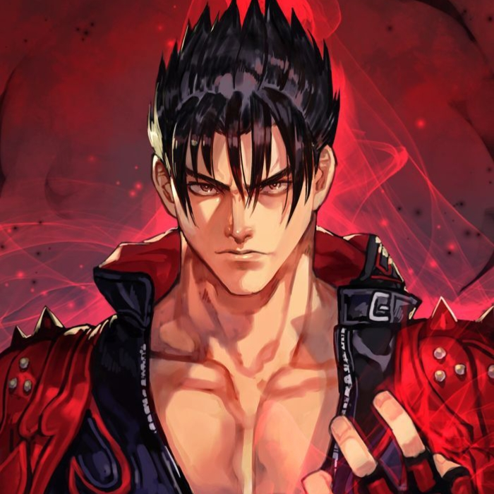
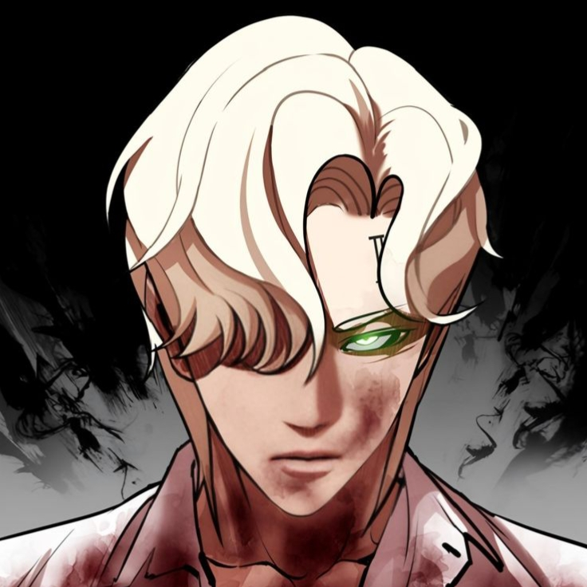
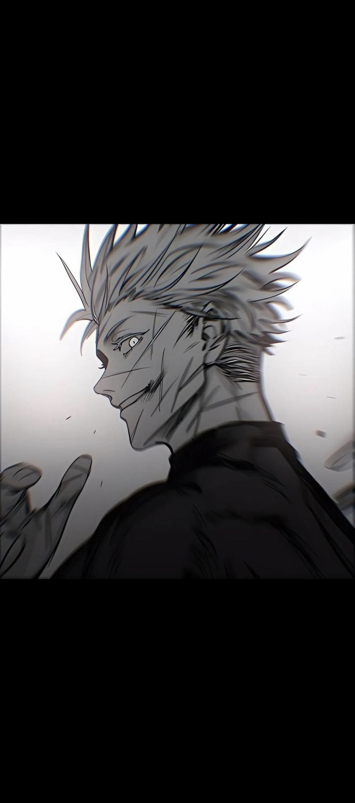
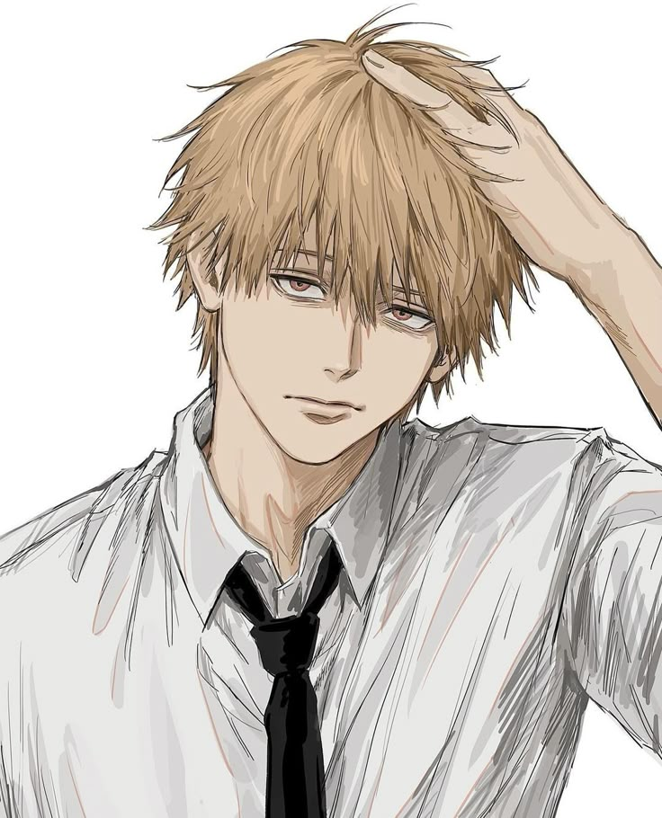

“Dulu gue pikir tenang itu tanda lemah. Sekarang gue tahu, justru di diam, badai belajar tunduk.” — Razen, 2025
Introduction
Gue nggak nulis ini buat minta simpati. Gue nulis ini karena ada yang mungkin butuh tahu: tenang itu proses, bukan hadiah. Ini bukan daftar pencapaian — ini arsip kecil tentang gimana seseorang belajar menahan, belajar memilih, dan akhirnya menemukan bentuk kekuatan yang nggak perlu teriak.
Buat yang baca: kalau lo pernah diam padahal pengen ngomong, semoga halaman ini ngasih sedikit peta — bukan jawaban instan, tapi arah yang mungkin lo butuh waktu buat ikutin.
Early life
Waktu kecil gue sering ngomong dulu, baru mikir. Kata-kata dulu jadi perisai buat nutup rasa nggak aman. Ada fase di mana gue bangga sama mulut yang galak — sampai satu hari gue liat dampaknya: orang mundur, bukan ngadep. Itu bikin gue mikir ulang. Perubahan pertama gue bukan dramatis; itu janji kecil yang gue ucapkan sendiri: aku bakal beda. Itu start dari niat, bukan seremoni.
Masa-masa sekolah itu keras: lo belajar banyak soal orang lain lewat pertemanan, komentar, dan urusan sehari-hari. Dari situ tumbuh rasa tanggung jawab kecil yang kelak jadi pondasi—bahwa kata-kata punya efek, dan lo berhak memilih bagaimana ngasih efek itu.
Turning point — The Lockdown Era
Ketika dunia direm oleh pandemi, hidup gue malah mulai bergerak ke arah lain — ke dalam. Kesunyian memaksa gue denger suara gue sendiri, dan kadang suara itu nggak enak didenger. Di masa itu datang orang-orang singkat: mereka hadir, mengajarkan, lalu pergi. Beberapa momen ninggalin bekas yang tajam, tapi bukan untuk dibuka lagi di depan umum — cukup jadi tanda bahwa hati ini butuh latihan.
Ada saat gue ngerasa kehilangan arah karena harapan yang nggak berbalas. Rasanya hampa, dan entah kenapa ada lagu yang pas banget sama mood itu — sebuah momen yang bikin gue sadar: menikmati rasa sakit nggak membuatmu lemah, itu ngasihmu bahan buat jadi lebih tangguh. Dari situ gue belajar, melepaskan bukan berarti lupa; melepaskan adalah memberi ruang buat bangun.
Intinya: masa-masa itu ngajar gue satu pelajaran sederhana—beberapa hubungan bukan untuk dimiliki selamanya, tapi cukup untuk membentuk siapa lo nanti.
Growth — Vocational years & small acts
Setelah janji itu, gue nggak langsung berubah jadi sempurna. Perubahan kerjanya lambat dan seringkali terlihat sepele: nahan kata kasar, bantuin orang tanpa pengakuan, lebih fokus kerja daripada gaya. Waktu SMK, gue sering kerja yang kotor dan susah—bukan buat nunjukin siapa gue, tapi karena itu yang harus dilakukan. Tindakan-tindakan kecil itu yang ngebentuk integritas yang nyata.
Bahkan hal sederhana — angkat meja waktu acara kelulusan, bantu beres-beres, ngerjain tugas sampai baju robek — itu bukan soal pamer kekuatan. Itu soal bukti: kekuatan yang dipakai untuk tujuan, bukan untuk panggung.
Personality & Philosophy
Gue nyebut diri gue “calm predator” bukan karena mau terlihat garang. Itu deskripsi singkat buat cara gue beroperasi: tenang, terukur, tapi siap ketika harus bertindak. Filosofi gue sederhana — sadar dulu, gerak kemudian. Disiplin lebih penting daripada ledakan emosi. Diam itu alat; bukan label kelemahan.
Kode personal gue: jangan cari perhatian, biarkan hasil yang berbicara. Bukan untuk menyombong, tetapi untuk menjaga energi. Kalau lo bisa mengatur energi sendiri, lo lebih efektif ngasih pengaruh ketimbang teriak paling keras di ruangan.
Character & Symbolism
Dalam kepala gue, ada potongan-potongan figur fiksi yang bantu jelasin sisi-sisi gue. Mereka bukan panutan sempurna — mereka cermin. Berikut ringkasan singkat kenapa tiap karakter terasa penting buat bagian diri gue:
| Character | Image | Symbolic role | Shared traits |
|---|---|---|---|
| Kujo Jotaro (JoJo’s Bizarre Adventure) |  |
Silent guardian | Controlled emotion, tactical composure |
| Simon "Ghost" Riley (Call of Duty) |  |
Unseen operator | Precision, hidden depth, tactical silence |
| Garou (One Punch Man) |  |
Evolving fighter | Growth through resistance |
| Itachi Uchiha (Naruto) |  |
Wise outcast | Moral restraint, emotional control |
| Levi Ackerman (Attack on Titan) |  |
Efficient soldier | Stoicism, inner burden, lethal efficiency |
| Trafalgar D. Law (One Piece) |  |
Surgical thinker | Cold rationality, strategic depth |
| Roronoa Zoro (One Piece) |  |
Disciplined warrior | Focus, loyalty, relentless training |
| Black Panther (Marvel) |  |
Regal protector | Balance of duty and empathy |
| Jin Kazama (Tekken) |  | Cursed inheritor | Inner conflict between calm and rage |
| Raiden (Metal Gear) |  |
Survivor / Reinventor | Reinvention through trauma |
| Daniel Park (Lookism) |  |
Mirror of self-image | Dual identity, search for worth |
| Eli Jang (Lookism) |  | Hardened protector | Loyalty, sacrifice, street morality |
| Tsukasa Shishio (Dr. Stone) |  |
Idealistic challenger | Physical might, uncompromising ideals |
| Gojo Satoru (Jujutsu Kaisen) |  | Calm infinity | Absolute confidence balanced with playful restraint |
| Denji (Chainsaw Man) |  | Rough freedom | Crude survival instinct, raw honesty |
These parallels are not endorsements — they are lenses. Each figure helps map a facet of how I understand myself: restraint, reinvention, loyalty, and the quiet work of becoming.
Visual notes & color
Biru listrik bukan semata warna; itu bahasa. Tenang dari kejauhan, intens dari dekat. Pilihan outfit yang sederhana dan rambut hitam—itu deklarasi: gue nggak pengen jadi pusat perhatian, gue pengen siap. Aura 'calm predator' bukan soal menakuti, tapi soal kesiapan. Kalau lo paham ini, lo paham kenapa gue lebih milih fungsi ketimbang tampilan.
Legacy & intent
Ini bukan naskah final. Ini arsip hidup — catatan yang bakal gue update. Tujuannya bukan jadi legenda cepat, tapi jadi peta kecil buat siapa pun yang merasa tersesat di antara ledakan emosi dan kehendak untuk tenang. Kalau ada yang baca dan ngerasa: 'oh, gue juga bisa', berarti halaman ini udah nyelesain tugasnya.